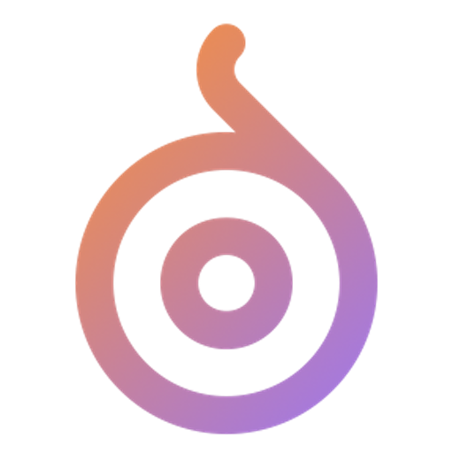

<ion-tabs #tabs (ionTabsDidChange)="setCurrentTab($event)">

  <!-- -------------------Custom Tabs with fab button------------------------------- -->
  <ion-fab vertical="bottom" horizontal="center" translucent="true">
    <ion-fab-button routerLink="/tabs/dashboard">
      <!-- <ion-icon name="add-outline"></ion-icon> -->
      
      <!-- <ion-icon name="add-circle" color="primary"></ion-icon> -->
    </ion-fab-button>
  </ion-fab>
  <ion-tab-bar slot="bottom">
    <ion-tab-button tab="courses">
      <ion-icon [name]="selectTab == 'courses' ? 'library' : 'library-outline'"></ion-icon>
    </ion-tab-button>
    <ion-tab-button tab="wish-list">
      <ion-icon [name]="selectTab == 'wish-list' ? 'heart' : 'heart-outline'"></ion-icon>
    </ion-tab-button>

    <ion-tab-button></ion-tab-button>

    <ion-tab-button tab="cart">
      <ion-icon [name]="selectTab == 'cart' ? 'cart' : 'cart-outline'"></ion-icon>
      <ion-badge color="danger"></ion-badge>
      <!-- <ion-badge color="danger">1</ion-badge> -->
    </ion-tab-button>
    <ion-tab-button tab="profile">
      <ion-icon [name]="selectTab == 'profile' ? 'person' : 'person-outline'"></ion-icon>
    </ion-tab-button>
  </ion-tab-bar>

</ion-tabs>